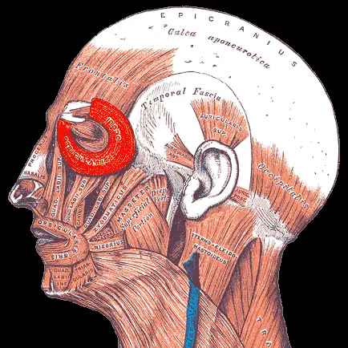
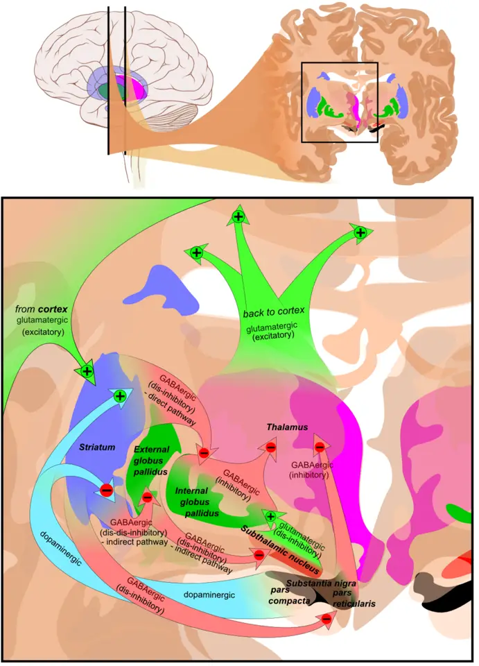

DX.8 — Blépharospasme essentiel
Le blépharospasme essentiel ferme les deux yeux par des spasmes involontaires et peut rendre le patient fonctionnellement aveugleS6. Il est rare, et son diagnostic échappe souvent, car sa présentation varie et plusieurs affections l'imitentS6S7. Le médecin le reconnaît à l'examen, puis il adresse le patient pour des injections de toxine botulique, traitement de première ligneS5S9.
1. Définition
Le blépharospasme essentiel est une dystonie focale de l'adulte, faite de spasmes involontaires, stéréotypés, bilatéraux et synchrones des muscles orbiculaires de l'œilS7. Ces spasmes, brefs ou soutenus, rétrécissent ou ferment la fente palpébraleS6. Le qualificatif « essentiel » signifie qu'aucune cause n'est connue : la dystonie est alors dite primaire ou idiopathiqueS7. Un clignement accru et une difficulté à rouvrir les yeux (DX.10) appartiennent au même tableau moteurS7.
2. Épidémiologie (Suisse, puis Europe)
Aucune série suisse ne mesure la prévalence du blépharospasme essentiel. L'étude européenne ESDE, conduite dans huit pays, mesure une prévalence de 36 cas par million, avec un intervalle de confiance à 95 % de 31 à 41S4. Cette étude se déclare elle-même conservatrice, car les cas non diagnostiqués lui échappentS4. Les personnes touchées, l'histoire naturelle et le poids fonctionnel expliquent l'enjeu clinique.
Qui est touché : Suisse, puis Europe
| Donnée | Valeur | Source |
|---|---|---|
| Dystonie primaire, huit pays européens (1996–1997) | 152 par million (IC 95 % 142–162), dont formes focales 117 par million | S4 |
| Formes focales (ESDE) | Dystonie cervicale 57, blépharospasme 36, crampe de l'écrivain 14 par million | S4 |
| Prévalence selon la région | 16 à 133 cas par million ; en Italie et au Japon, le blépharospasme dépasse la dystonie cervicale | S6 |
| Âge de début | Pic entre la cinquième et la septième décennie ; 53,3 ± 9,5 ans dans une cohorte de 211 patients | S6S8 |
| Sexe | Prépondérance féminine constante ; 146 femmes sur 211 patients ; 66 % de femmes dans les essais Cochrane | S7S8S9 |
| Famille | Jusqu'à 25 % des patients ont au moins un apparenté atteint de dystonie | S7 |
| Sécheresse oculaire | Une étude japonaise trouve 8,1 % de blépharospasme parmi les patients souffrant de sécheresse oculaire | S7 |
Histoire naturelle
Un clignement accru isolé pourrait en être une forme fruste, mais aucune étude prospective ne l'a encore confirméS7. Les symptômes oculaires sensitifs précèdent souvent les spasmes de plusieurs mois ou annéesS7.
La dystonie s'étend aux régions voisines, surtout oromandibulaire et cervicale, chez environ deux tiers des patients, le plus souvent dans les cinq premières annéesS7. Une cohorte multicentrique estime cette extension à environ la moitié des patients en cinq ans ; les deux chiffres situent le risque entre un sur deux et deux sur troisS8. La plupart des extensions surviennent après 50 ans, quel que soit l'âge de débutS7. Le traitement reste symptomatique, car aucune thérapie ne modifie l'évolutionS7S8.
Poids fonctionnel et non moteur
Le handicap vient de la cécité fonctionnelle que provoquent les spasmes, avec de lourdes conséquences émotionnelles et comportementalesS6. Lire, conduire, regarder la télévision ou faire le ménage deviennent difficiles, et beaucoup ont besoin d'un accompagnant pour sortirS1. Beaucoup de patients ne peuvent plus mener une vie sociale normale, ce qui les isoleS6.
Trois études contrôlées sur six trouvent plus de symptômes obsessionnels-compulsifs que chez les témoins ; une étude sur trois trouve plus de dépressionS7. Au moins 50 % des patients atteints de dystonie crânienne dorment mal, contre au plus 20 % des témoinsS7. Plusieurs patients restent insatisfaits malgré une bonne réponse motrice, ce qui justifie une prise en charge des troubles non moteursS7.
3. Physiopathologie
Les signes ne se comprennent qu'avec une base à connaître : le muscle qui ferme, celui qui ouvre et le réflexe qui commande le clignement. Dans le blépharospasme, les interneurones du tronc cérébral qui portent la réponse R2 du clignement sont hyperexcitables, car l'inhibition qui les freine fait défautS7. Les ganglions de la base règlent cette excitabilité ; leur dysfonction s'inscrit dans une maladie de réseauS6S7. La chaîne du mécanisme aux signes relie chaque anomalie à l'examen qui la montre et au traitement qui la corrige.
Base à connaître : fermer, ouvrir, cligner
Un clignement spontané normal associe une brève contraction de l'orbiculaire de l'œil et un relâchement du releveur de la paupière supérieureS6. L'orbiculaire ferme donc l'œil, tandis que le releveur l'ouvre ; dans la dystonie, la contraction déborde la paupière et entraîne le sourcil vers le basS6S8. Ce débordement distingue le spasme d'une ptose par faiblesse du releveur, comme dans la myasthénieS8.
Le muscle orbiculaire de l'œil, effecteur du spasme. Cette planche de Gray montre la face de profil ; l'orbiculaire de l'œil y est surligné en rouge.

Lisez d'abord seul ce cliché (le muscle orbiculaire de l'œil, effecteur du spasme) : cherchez vous-même le signe.
La copie annotée (le muscle orbiculaire de l'œil, effecteur du spasme) porte les repères décrits ci-dessous.
- L'orbiculaire, qui entoure la fente palpébrale, ferme l'œil par sa portion prétarsale, au bord des paupières.
- Le frontal élève le sourcil ; il se contracte quand le patient lutte contre la fermeture.
- Les fibres orbitaires de l'orbiculaire abaissent le sourcil pendant le spasme.
- Le releveur de la paupière supérieure, qui ouvre l'œil, siège dans l'orbite et reste invisible sur cette vue.
Ce que l'image décide. Le médecin cherche l'abaissement du sourcil : il signe une contraction de l'orbiculaire et non une ptose.

Le réflexe de clignement trigémino-facial part du nerf supraorbitaire et aboutit aux orbiculairesS6. Sa réponse précoce R1, homolatérale, est pontine ; sa réponse tardive R2, bilatérale, passe par le pont et la partie latérale du bulbeS6. Une stimulation d'un seul côté déclenche donc une réponse R2 des deux côtés, ce qui s'accorde avec un spasme bilatéral et synchroneS6.
Les structures rostrales, dont les ganglions de la base, contrôlent l'excitabilité des interneurones de ce réflexeS6. Le noyau pédonculopontin, qui reçoit des afférences du pallidum interne, exerce une action inhibitrice sur le clignement de sursautS6. Chez des patients dystoniques, la fixation sur les récepteurs dopaminergiques de type D2 du putamen baisse de 29 %S6.
Boucle cortex, ganglions de la base et thalamus. Ce schéma superpose deux coupes coronales ; les flèches vertes sont excitatrices, les rouges inhibitrices.

Lisez d'abord seul ce cliché (boucle cortex, ganglions de la base et thalamus) : cherchez vous-même le signe.
La copie annotée (boucle cortex, ganglions de la base et thalamus) porte les repères décrits ci-dessous.
- Le striatum reçoit le cortex et la dopamine de la substance noire.
- Le pallidum interne exerce un frein permanent sur le thalamus.
- Le thalamus renvoie au cortex ce que le pallidum laisse passer.
- La substance noire compacte est la source de la dopamine qui module le striatum.
- Le schéma ne montre pas le tronc cérébral : le pallidum interne y projette aussi, vers le noyau pédonculopontin.
- Une IRM normale ne réfute pas ce circuit, car le défaut reste fonctionnel.
Ce que l'image décide. Le clinicien retient un trouble de réseau ; il ne cherche pas de lésion dans une forme typique isolée.

Un modèle animal explique pourquoi une irritation ou une faiblesse palpébrale peut révéler la maladieS7. Une petite perte de dopamine striatale réduit l'inhibition tonique des circuits trigéminaux ; une faiblesse de l'orbiculaire augmente ensuite la commande adaptativeS7. Chacune isolée reste muette, mais leur réunion provoque clignements forcés et spasmes bilatérauxS7. C'est pourquoi une maladie de la surface oculaire, une paralysie faciale ou une myasthénie peuvent précéder un blépharospasmeS7.
Une maladie de réseau
Une grande série trouve une lésion cérébrale explicative chez 18 patients sur 1114, soit 1,6 %S6. Sur 48 cas lésionnels, la lésion est située dans le thalamus 12 fois, le tronc cérébral bas 11 fois, les ganglions de la base 9 fois et le cervelet 9 foisS6. Le mésencéphale est atteint 7 fois et le cortex une seule fois ; ces sites dessinent un réseau étenduS6.
En tomographie par émission de positons, le striatum et le thalamus sont hypermétaboliques, même après une injection de toxine qui supprime les spasmesS6. Ces anomalies sont donc intrinsèques à la maladie et ne résultent pas de l'activité musculaireS6. Le cortex cingulaire antérieur, principale entrée corticale vers l'orbiculaire, participe aussi au contrôle du clignementS7.
Les patients ont aussi un seuil de discrimination temporelle somesthésique élevé, qui ne s'améliore pas après toxineS7. Les mutations connues de GNAL, ANO3, TUBB4A ou CIZ1 représentent moins de 2 % des causes génétiques des dystonies de l'adulte, et aucune ne cause un blépharospasme purS7. La maladie paraît multifactorielle : des gènes encore inconnus s'ajoutent à des facteurs épigénétiques et environnementauxS7.
Du mécanisme aux signes, puis au traitement
| Perturbation | Signe qui en résulte | Exploration qui la montre | Ce qui la corrige |
|---|---|---|---|
| Inhibition insuffisante des interneurones R2 | Spasmes bilatéraux synchrones | Cycle de récupération R2 accéléré S6 | La toxine réduit les spasmes sans normaliser le réflexe S7 |
| Contraction excessive de l'orbiculaire | Fermeture, cécité fonctionnelle | Électromyogramme de surface de l'orbiculaire S6 | La toxine bloque la libération d'acétylcholine S10 |
| Contraction prétarsale involontaire | Réouverture difficile, frontal contracté | Observation clinique S7 | Injections prétarsales S7 |
| Intégration sensorimotrice anormale | Geste antagoniste efficace, photophobie | Inhibition par prépulsion S7 | Geste antagoniste, verres teintés FL-41 S7 |
| Atteinte non motrice du réseau | Dépression, symptômes obsessionnels, mauvais sommeil | Entretien ciblé S7 | Prise en charge des troubles non moteurs S7 |
4. Démarche diagnostique
Le médecin écarte d'abord les trois urgences de la liste : la kératite aiguë (DX.6), le corps étranger ou l'abrasion cornéenne (DX.5) et la dystonie palpébrale médicamenteuse (DX.9). Il reconnaît ensuite le spasme bilatéral synchrone et le sépare de ses imitateurs, car le diagnostic reste clinique et donc exposé à l'erreurS8. Les tics trompent le plus souvent : l'algorithme validé a classé à tort 27 patients sur 43 atteints de tics, soit 64 %S8. L'erreur classique du débutant consiste à traiter un œil sec pendant des mois.
Imitateurs et diagnostics à écarter
| Diagnostic | Élément qui tranche | Piège | Conduite si positif |
|---|---|---|---|
| 🚩 DX.6 Kératite aiguë | Œil rouge et douloureux, baisse visuelle | Une maladie du segment antérieur peut aussi déclencher un vrai blépharospasme S7 | Examen oculaire le jour même |
| 🚩 DX.5 Corps étranger, abrasion | Début brutal, souvent unilatéral, après un traumatisme | Le spasme réflexe ferme l'œil et masque la lésion | Examen de la cornée selon DX.5 |
| 🚩 DX.9 Dystonie médicamenteuse | Prise d'un neuroleptique ; dyskinésie tardive S7 | Le tableau moteur ressemble au blépharospasme essentiel | Revoir le traitement selon DX.9 |
| DX.7 Spasme hémifacial | Contractions d'une hémiface, joue et bouche comprises S8 | Une compression locale peut le soulager et imiter un geste antagoniste S8 | Avis neurologique selon DX.7 |
| DX.10 Apraxie de l'ouverture | Paupières fermées sans spasme, frontal contracté S7 | Elle accompagne souvent le blépharospasme | Injections prétarsales discutées S7 |
| DX.4 Tic palpébral | Suppression volontaire possible S8 | 64 % des tics remplissent l'algorithme S8 | Revoir l'âge de début et l'histoire |
| DX.3 Myokymie palpébrale | Pas de spasme bilatéral synchrone de l'orbiculaire S8 | La gêne peut être forte malgré un mouvement minime | Voir DX.3 |
| DX.1 Sécheresse oculaire, DX.2 blépharite | Signes de la surface oculaire | Elles coexistent souvent avec le blépharospasme S6S7 | Traiter la surface sans clore le diagnostic |
| Ptose myasthénique | Ptose sans spasme, fatigable S8 | Une myasthénie peut, rarement, s'associer à un vrai blépharospasme S7 | Toxine seulement avec une extrême prudence S10 |
| Chorée faciale | Mouvements non stéréotypés S8 | Elle touche aussi les paupières | Bilan neurologique |
L'erreur classique du débutant, pas à pas
Exemple : une femme de 58 ans consulte pour des yeux secs, brûlants, qui « se ferment au soleil » depuis deux ansS7. Le débutant prescrit des larmes artificielles, puis les renouvelle, car il attribue la fermeture à l'irritation. Or les symptômes oculaires du blépharospasme résistent au traitement local et précèdent les spasmes de mois ou d'annéesS7.
Le bon raisonnement suit quatre temps : mécanisme, signe, examen, décision. Le mécanisme est un circuit du clignement mal freiné, que la lumière et l'irritation sollicitentS6S7. Le signe est un spasme bilatéral qui abaisse les sourcils ; l'examen compte les clignements pendant deux minutes, et 16 par minute ou plus signent un clignement accruS8. La décision est l'adressage à un neurologue ou à un ophtalmologue formé à la toxine, sans abandonner le traitement de la surfaceS5S6.
5. Anamnèse ciblée et drapeaux rouges
L'anamnèse caractérise la fermeture involontaire, le clignement accru, la photophobie et la sensation de sécheresse ou de brûlure. Elle recherche ensuite les gestes qui soulagent, l'extension à la mâchoire ou au cou, les médicaments et le retentissement psychique. Les drapeaux rouges orientent vers une autre cause ou imposent une action le jour même.
Fermeture involontaire des paupières
Le siège est bilatéral et synchroneS7, même si une paupière peut être plus atteinte que l'autreS1. Le type est un spasme bref ou soutenu, qui rétrécit ou ferme la fente palpébraleS6. Le stress et l'énervement l'aggravent, tandis que la détente et les vacances l'atténuent souventS1. Les tâches qui demandent de l'attention réduisent habituellement la durée et la fréquence des spasmesS7.
Le symptôme est typique quand il est bilatéral et synchrone, car ce caractère atteint 95 % de sensibilitéS8. Il devient atypique s'il reste strictement unilatéral et gagne la joue : le spasme hémifacial passe alors au premier planS8. La question décisive demande si le patient peut empêcher le spasme ; 87 % des patients répondent qu'ils ne le peuvent pasS8.
Clignement accru
Le clignement est plus fréquent au repos et pendant la conversation que chez les témoinsS7. Il existe chez 85 % des patients, mais aussi chez la moitié des témoins malades, d'où une spécificité de 50 %S8. Il est donc typique sans être discriminant, car l'état psychologique fait varier le clignement normalS8. De longs spasmes peuvent même masquer ce signe en réduisant le nombre de clignements comptésS8.
Photophobie
Les patients sont nettement plus sensibles à la lumière que les témoins, autant que les migraineuxS7. La question sur la lumière vive qui ferme les yeux est positive chez 76 % des patientsS8. Ce symptôme est typique ; il s'associe à une hyperactivité du thalamus en imagerie fonctionnelleS7. Des verres teintés FL-41, qui filtrent la lumière bleue, réduisent la photophobie et la fréquence des spasmesS6S7.
Sécheresse, brûlure, sable dans les yeux
Selon les séries, 22 % à 57 % des patients décrivent brûlure, sensation de sable, sécheresse ou photophobieS7. Ces plaintes précèdent souvent les spasmes et résistent au traitement local ; la production lacrymale mesurée reste souvent normaleS7. Elles peuvent appartenir à la maladie ou traduire une affection du segment antérieur, qui doit être cherchée à l'examenS6S7. Le symptôme n'est donc ni typique ni atypique : il oriente, mais il ne clôt jamais le diagnostic.
Gestes qui soulagent
Un geste antagoniste est présent chez la moitié à 70 % des patients selon les sériesS6S7. Toucher légèrement le visage, tirer la paupière ou le sourcil, parler, chanter, mâcher ou porter des verres teintés permet de garder les yeux ouvertsS7. Ce signe est très typique : il atteint 94 % de spécificité, mais seulement 58 % de sensibilitéS8. Son absence ne permet donc pas d'exclure le diagnostic ; sa présence ne prouve pas un trouble volontaireS6S8.
Extension à la mâchoire, à la bouche ou au cou
Le syndrome de Meige associe blépharospasme et dystonie oromandibulaire des muscles de la mâchoire, de la bouche et de la langueS3. Dans les formes sévères, parler et déglutir deviennent difficiles ; morsures, pertes dentaires et douleurs de l'articulation temporo-mandibulaire s'y ajoutentS3. Un tremblement de la tête ou des membres supérieurs peut aussi accompagner le blépharospasmeS6. Dans une cohorte de 211 patients, 131 avaient une forme segmentaire ou multifocale et 80 une forme focaleS8.
Médicaments et antécédents
Le médecin recherche un neuroleptique, une maladie de Parkinson ou une paralysie faciale, car ces situations donnent des blépharospasmes secondairesS7. Il note chaque séance antérieure de toxine : nom commercial, numéro de lot, dose, sites et durée d'effetS10. Il demande enfin si d'autres cas de dystonie existent dans la famille, car jusqu'à 25 % des patients ont au moins un apparenté atteint de dystonieS7.
Retentissement psychique et sommeil
La dépression et les symptômes obsessionnels-compulsifs paraissent appartenir au spectre de la maladie, indépendamment de sa sévérité motriceS7. Le mauvais sommeil suit surtout la dépression et non la sévérité des spasmesS6. Ces troubles se cherchent par des questions directes, car ils pèsent sur la qualité de vie autant que les spasmesS7.
Drapeaux rouges
| Drapeau rouge | Ce qu'il signifie | Action immédiate |
|---|---|---|
| Œil rouge, douloureux, baisse visuelle | Atteinte cornéenne, qui imite ou déclenche le spasme S7 | Examen oculaire le jour même (DX.6, DX.5) |
| Déficit neurologique focal, trouble oculomoteur | Blépharospasme secondaire à une lésion du thalamus, du tronc cérébral ou du cervelet S6 | Avis neurologique et IRM cérébrale |
| Début sous neuroleptique | Dystonie médicamenteuse S7 | Prise en charge selon DX.9 |
| Ptose fatigable, diplopie | Myasthénie possible S8 | Avis neurologique avant toute toxine S11 |
| Troubles de déglutition, de la parole ou de la respiration après injection | Diffusion de la toxine à distance S10 | Contacter un médecin immédiatement S10 |
| Douleur oculaire après injection chez un patient à angle étroit | Effet anticholinergique de la toxine S10 | Examen ophtalmologique sans délai |
| Dystonie craniocervicale de début précoce ou familiale | Forme génétique possible S5 | Consultation spécialisée et test DYT6 S5 |
6. Examen physique ciblé, région par région
L'examen suit l'ordre où le médecin le réalise chez un patient qui ferme les yeux : il regarde d'abord, puis il provoque, puis il cherche une autre causeS8. Il observe la face au repos et en conversation, puis les sourcils et les paupières, et il fait montrer le geste antagoniste. Il teste la suppression volontaire et le tapotement glabellaire, puis il examine la surface oculaire. Il termine par l'hémiface et le nerf facial, la mâchoire et le cou, l'oculomotricité et l'examen neurologique.
1. Face au repos et en conversation
Le signe recherché est un spasme stéréotypé, bilatéral et synchrone qui rétrécit ou ferme les deux fentes palpébralesS8. Le médecin compte les clignements pendant deux minutes, yeux ouverts au repos ; 16 clignements par minute ou plus signent un clignement accruS8. Il observe aussi pendant la conversation, car le clignement y augmente chez les patientsS7. Une vidéo standardisée garde la trace d'un phénomène intermittent et facilite les comparaisons ultérieuresS8.
2. Sourcils et paupières
Le spasme se reconnaît à un sourcil qui descend ou à une région de la paupière inférieure qui monteS8. Ce débordement prouve une contraction de l'orbiculaire, car une ptose abaisse la paupière sans mouvement du sourcilS8. Si les yeux restent fermés sans spasme alors que le front se plisse, le patient a une apraxie de l'ouvertureS7. Ce signe peut accompagner le blépharospasme ou exister seul (DX.10)S7.
3. Geste antagoniste
Le médecin demande au patient de montrer ce qui l'aide à garder les yeux ouverts, puis il observe l'effet immédiatS8. Le geste est efficace quand la sévérité des spasmes diminue juste après son exécutionS8. Une compression locale soulage aussi un spasme hémifacial ; ce soulagement mécanique ne vaut pas geste antagonisteS8.
4. Suppression volontaire
Le médecin demande si le patient peut arrêter le spasme par un effort intérieur, sans plisser le frontS8. L'impossibilité de supprimer le spasme existe chez 87 % des patients, mais sa spécificité ne dépasse pas 52 %S8. Une suppression facile oriente au contraire vers un tic, dont elle constitue un traitS8.
5. Tapotement glabellaire répété
Un tapotement léger et répété du front déclenche le clignement réflexe ; sa répétition évalue au lit du malade le contrôle inhibiteur du réflexeS6. Ce geste n'a pas de valeur diagnostique validée dans le blépharospasme ; seule l'électrophysiologie mesure ce contrôle (point 9)S6.
6. Surface oculaire
Le médecin cherche une affection du segment antérieur, car elle est associée au blépharospasme et peut le déclencherS7. Chez des patients atteints, ces affections ont été reconnues avec 77 % de sensibilité et 94 % de spécificitéS6. Avant une toxine, il teste soigneusement la sensibilité cornéenne d'un œil déjà opéréS10. La technique d'examen de la cornée figure dans les cours DX.5 et DX.6.
7. Hémiface et nerf facial
Des contractions limitées à une hémiface, qui gagnent la joue et la bouche, orientent vers un spasme hémifacialS8. Une paralysie faciale périphérique peut entraîner une contraction soutenue de l'hémiface opposée, qui ressemble au blépharospasmeS6. Ce phénomène illustre la plasticité inadaptée du réflexe chez un sujet prédisposéS6.
8. Mâchoire, bouche et cou
Il observe la mâchoire, la langue et le cou au repos, puis pendant la parole et la masticationS3. Une dystonie oromandibulaire associée définit le syndrome de Meige ; une atteinte cervicale signe une extension segmentaireS3S7. Cette recherche compte, car l'extension survient surtout dans les cinq premières annéesS7.
9. Oculomotricité et ptose
Une ptose sans spasme, avec diplopie ou fatigabilité, oriente vers une myasthénie et non vers une dystonieS8. Une myasthénie peut toutefois coexister avec un vrai blépharospasme, d'après quelques observations publiéesS7. Ce point conditionne le traitement, car la toxine exige une extrême prudence en cas de myasthénieS10.
10. Examen neurologique
Le médecin cherche un tremblement de la tête ou des membres, fréquent dans le blépharospasmeS6. Il cherche aussi un syndrome parkinsonien et tout déficit focal, car ces signes évoquent une forme secondaireS7. Un examen neurologique normal soutient la forme essentielle, qui reste la plus fréquenteS7.
7. Approche syndromique
Le tableau se décompose en cinq syndromes ; le tableau des syndromes sépare les signes que le patient rapporte de ceux que le médecin constate.
7.1 Syndrome dystonique palpébral
Des spasmes de l'orbiculaire ferment les paupières et entraînent les sourcils ; ce syndrome moteur constitue le noyau du diagnosticS8.
7.2 Syndrome d'apraxie de l'ouverture
Le patient ne parvient plus à rouvrir les yeux malgré la contraction du frontal ; ce défaut de réouverture modifie la technique d'injectionS7.
7.3 Syndrome sensitif oculaire
Brûlure, sécheresse et photophobie forment un syndrome sensitif qui précède souvent les spasmesS7.
7.4 Syndrome d'extension craniocervicale
Quand la dystonie gagne la mâchoire, la bouche ou le cou, cette extension aggrave le pronostic fonctionnelS3S7.
7.5 Syndrome non moteur
Dépression, symptômes obsessionnels et troubles du sommeil composent un versant non moteur souvent négligéS7.
Les cinq syndromes
| Syndrome | Signes fonctionnels | Signes physiques |
|---|---|---|
| 7.1 Dystonique palpébral | Yeux qui se ferment contre la volonté ; vision empêchée S8 | Spasme bilatéral synchrone, sourcils abaissés, clignement ≥ 16 par minute S8 |
| 7.2 Apraxie de l'ouverture | Impossible de rouvrir les yeux S7 | Paupières closes sans spasme, frontal contracté S7 |
| 7.3 Sensitif oculaire | Brûlure, sable, sécheresse, éblouissement S7 | Production lacrymale souvent normale S7 |
| 7.4 Extension craniocervicale | Parole et déglutition gênées, douleurs mandibulaires S3 | Dystonie oromandibulaire ou cervicale, tremblement S3S6 |
| 7.5 Non moteur | Tristesse, pensées obsédantes, mauvais sommeil S7 | Échelles de dépression ou de symptômes obsessionnels S7 |
7.1 Syndrome dystonique palpébral
Sa définition opérationnelle est un rétrécissement ou une fermeture palpébrale avec participation des muscles qui dépassent la paupièreS8. Le geste de recherche consiste à regarder le sourcil et la paupière inférieure pendant les manœuvres qui déclenchent les spasmesS8. Le mécanisme est une hyperexcitabilité des interneurones du réflexe de clignement, privés de leur inhibitionS7.
7.2 Syndrome d'apraxie de l'ouverture
Sa définition est un échec transitoire de la réouverture volontaire, sans spasme visibleS7. Le médecin le cherche en demandant au patient d'ouvrir les yeux après une fermeture ; le front se plisse, mais les paupières restent closesS7. Le mécanisme est une contraction involontaire de l'orbiculaire prétarsal ou, plus rarement, un défaut de contraction du releveurS7.
7.3 Syndrome sensitif oculaire
Il regroupe brûlure, sensation de sable, sécheresse et photophobie, présentes chez 22 % à 57 % des patientsS7. Il le cherche par l'interrogatoire, puis par l'examen de la surface oculaireS6. Le mécanisme associe une perception anormale et, parfois, une affection réelle du segment antérieurS7.
7.4 Syndrome d'extension craniocervicale
Il se définit par une dystonie d'une région voisine : mâchoire, bouche, langue ou couS3S7. Il le cherche pendant la parole et la mastication, puis au repos du couS3. Le vieillissement réduit l'inhibition intracorticale, ce qui rendrait les patients plus vulnérables à cette extensionS7.
7.5 Syndrome non moteur
Il réunit dépression, symptômes obsessionnels-compulsifs, troubles du sommeil et troubles cognitifs légersS7. Le médecin le cherche par des questions directes, puis par des échelles validées si le doute persisteS7. Le mécanisme proposé implique des régions du réseau qui traitent les émotions, distinctes des régions motricesS7.
8. Diagnostic positif et critères
Le diagnostic reste clinique, car aucun examen ne le prouveS7. Les critères validés en 2021 exigent d'abord le spasme bilatéral synchrone, puis un geste antagoniste ; à défaut, un clignement accru complète le tableauS8. Cet algorithme atteint 90 % de sensibilité et 82 % de spécificitéS8. La sévérité se mesure par des échelles, et le mot « essentiel » suppose d'avoir écarté une cause secondaireS7.
Critères diagnostiques validés (Defazio, 2021)
| Élément ou combinaison | Sensibilité | Spécificité |
|---|---|---|
| 1. Spasme stéréotypé, bilatéral et synchrone de l'orbiculaire | 95 % | 78 % |
| 2. Geste antagoniste efficace | 58 % | 94 % |
| 3. Clignement accru (≥ 16 par minute au repos) | 85 % | 50 % |
| 4. Impossibilité de supprimer volontairement le spasme | 87 % | 52 % |
| Algorithme 1 + (2 ou 3) | 90 % | 82 % |
| Algorithme 1 + (2 ou 4) | 88 % | 83 % |
| Algorithme 1 + (2 ou 3 ou 4) | 92 % | 79 % |
Ces valeurs proviennent de 211 patients et de 166 témoins examinés en vidéo par huit évaluateurs, en Europe et aux États-UnisS8. Le spasme seul ne suffit pas, car sa spécificité de 78 % laisse passer trop de faux positifsS8. L'algorithme reconnaît donc environ neuf malades sur dix et écarte environ huit non-malades sur dixS8.
Échelles de sévérité
L'échelle de Jankovic, la plus utilisée, contient deux sous-échelles cotées sur cinq points : intensité et fréquence des spasmesS7. Une échelle plus récente retient six aspects, dont le degré et la durée de fermeture, la fréquence des spasmes et l'apraxie associéeS6. Les échelles générales de dystonie mesurent aussi les autres régions, mais aucune échelle ne cote les troubles non moteursS7.
Causes secondaires à écarter
Un blépharospasme secondaire peut suivre une lésion du thalamus, des ganglions de la base, du tronc cérébral, du cervelet, du mésencéphale ou du cortexS7. Il peut aussi compliquer une maladie de Parkinson, une dyskinésie tardive, une paralysie faciale ou une myasthénieS7. Ces formes restent bien moins fréquentes que la forme idiopathiqueS7.
9. Examens complémentaires
Aucun examen biologique ne contribue au diagnostic ; les examens servent à écarter une autre cause ou une forme secondaireS7.
9.a Gold standard
La référence reste l'examen clinique par un neurologue expérimenté des mouvements anormaux, qui servait d'étalon dans l'étude de validationS8.
9.b Première intention
L'examen ophtalmologique du segment antérieur précède tout traitement, car une affection de surface peut coexister ou déclencher le spasmeS6S7. L'imagerie cérébrale ne se demande pas d'office : une lésion explicative n'existe que chez 1,6 % des patientsS6.
9.c Alternatives
Si la clinique hésite, l'étude électrophysiologique du réflexe de clignement montre une excitabilité accrue, normale dans les formes psychogènesS6.
9.d Deuxième intention
L'IRM cérébrale se réserve aux signes focaux ou atypiques, et le test génétique aux débuts précoces ou familiauxS5S6. La synthèse des résultats indique la conduite pour chaque anomalie.
9.a Examen clinique de référence
Le protocole validé filme le patient pendant des manœuvres qui déclenchent les spasmes, la démonstration d'un geste antagoniste et le comptage des clignementsS8. Le comptage dure deux minutes au repos, yeux ouverts ; toute fermeture compte alors comme un clignementS8. Une durée minimale de spasme n'est pas exigée, car un spasme peut durer moins d'une secondeS8. L'accord entre évaluateurs est satisfaisant pour le spasme, le geste antagoniste et le clignement accruS8.
9.b Examen ophtalmologique
L'examen cherche une maladie du segment antérieur, associée au blépharospasme dans trois études cas-témoinsS7. Il ne confirme pas le blépharospasme, mais il évite d'attribuer à la dystonie une kératite ou une blépharite traitableS7. Avant toxine, il évalue aussi la sensibilité cornéenne d'un œil opéré et le risque d'angle ferméS10.
9.c Cycle de récupération du réflexe de clignement
Deux stimulations du nerf supraorbitaire se suivent à intervalles variables, et l'électromyogramme de surface enregistre l'orbiculaireS6. Chez le sujet sain, la réponse R2 disparaît de 0 à 200–300 ms, atteint 30–50 % à 500 ms et 70–90 % à 1500 msS6. Dans le blépharospasme, la courbe se déplace vers la gauche, car R2 réapparaît plus tôtS6.
Cette anomalie n'est pas spécifique de la dystonie et ne pose donc pas le diagnostic à elle seuleS6. Elle reste normale dans la dystonie psychogène, ce qui lui donne une utilité clinique réelleS6. Elle accompagne les spasmes de l'orbiculaire mais reste normale chez les patients qui ont seulement un clignement accruS7.
9.d IRM cérébrale
L'IRM recherche une lésion du thalamus, du tronc cérébral, des ganglions de la base, du cervelet ou du mésencéphaleS6. Elle se justifie devant un déficit focal, un trouble oculomoteur ou une évolution atypique, car ces signes évoquent une forme secondaireS7. Les études morphométriques et fonctionnelles du putamen ou du cervelet restent des outils de recherche aux résultats discordantsS6.
9.d Test génétique
Les recommandations européennes proposent le test DYT6 dans les dystonies craniocervicales de début précoce ou familiales, ou après exclusion de DYT1S5. Le test se fait seulement après le diagnostic cliniqueS5. Les gènes connus n'expliquent aucun blépharospasme pur, ce qui limite l'intérêt du test dans la forme typique de l'adulteS7.
Résultats, signification et conduite
| Résultat | Signification | Conduite |
|---|---|---|
| Affection du segment antérieur | Cause associée ou déclencheur S7 | Traiter la surface et réévaluer les spasmes |
| R2 réapparue précocement | Excitabilité accrue du tronc cérébral S6 | Conforte une dystonie organique |
| R2 normale | Clignement accru isolé, forme psychogène ou autre diagnostic S6S7 | Revoir le diagnostic |
| Lésion à l'IRM | Blépharospasme secondaire S6 | Traiter la cause avec le neurologue |
| IRM normale | Compatible avec la forme essentielle S7 | Poursuivre le traitement symptomatique |
| Variant DYT6 | Dystonie génétique S5 | Conseil génétique familial |
10. Arbre décisionnel
L'arbre part d'un patient qui ferme les yeux contre sa volonté ; il écarte les urgences avant de discriminer les imitateursS8.
- Si l'œil est rouge, douloureux ou voit moins bien, le médecin cherche d'abord une kératite ou un corps étranger et examine la cornée le jour même.
- Si le patient prend un neuroleptique, le médecin envisage d'abord une dystonie médicamenteuseS7.
- Si les contractions touchent une seule hémiface, joue et bouche comprises, il oriente vers un spasme hémifacialS8.
- Si les paupières restent closes sans spasme alors que le front se plisse, il retient une apraxie de l'ouverture, isolée ou associéeS7.
- Si un spasme bilatéral synchrone existe et qu'un geste antagoniste le soulage, le blépharospasme est probableS8.
- Si le geste antagoniste manque, un clignement d'au moins 16 par minute ou une impossibilité de suppression suffit à retenir le diagnosticS8.
- Si le patient supprime facilement le spasme et que l'histoire débute tôt, il reconsidère un ticS8.
- Si un déficit focal, une ptose fatigable ou une extension rapide apparaît, il demande un avis neurologique et une IRMS6S7.
- Si la forme essentielle gêne la vision ou les activités, il adresse le patient pour une toxine botulique de type AS5.
11. Prise en charge selon les recommandations suisses
La conduite suit les recommandations européennes et les informations professionnelles suisses (AIPS)S5S10.
11.A But
Le traitement vise à réduire la gravité des spasmes : une seule séance de toxine l'améliore davantage qu'un placeboS9. Dans une étude citée par l'AIPS, le succès était défini par un score de spasme de 2 ou moins sur 4 aux deux yeux, à la semaine 4S10. Ce critère était atteint chez environ 90 % des patients déjà traitésS10.
11.B Moyens
La maladie ne menace pas la vie, mais la toxine et la cécité fonctionnelle imposent une conduite d'urgence chronologiqueS10. La toxine botulique de type A est le traitement de première ligne des dystonies crâniennes primaires, à l'exception de la forme oromandibulaireS5. Une seule séance réduit la sévérité de 0,93 point sur la sous-échelle de Jankovic, quatre à six semaines après l'injectionS9. Trois préparations portent l'indication en Suisse : Botox®, Xeomin® et Dysport®, dont les unités ne sont pas interchangeablesS10S11S12.
Le traitement suit un ordre : la toxine d'abord, puis les aides non médicamenteuses, enfin les médicaments oraux et la chirurgie. Le tableau des toxines compare doses, maxima et intervalles, et les situations spéciales précisent grossesse, allaitement, âge et contre-indications.
Urgence — conduite chronologique
| Délai | Situation | Geste | Délai maximal |
|---|---|---|---|
| Minutes | Troubles de la déglutition, de la parole ou de la respiration après une injection | Contacter immédiatement un médecin ; la diffusion de la toxine peut être fatale S10 | Sans délai |
| Heures à semaines | Faiblesse musculaire diffuse, dysphagie, pneumonie | Les symptômes surviennent de quelques heures à plusieurs semaines après l'injection S10 | Évaluation le jour même |
| Heures | Œil douloureux, vision trouble chez un patient à angle étroit | Examen ophtalmologique, car la toxine a une activité anticholinergique S10 | Le jour même |
| Jours | Défaut épithélial ou ulcération cornéenne par clignement réduit | Collyre protecteur, pommade, lentille souple thérapeutique ou occlusion S10 | Traitement actif dès la découverte |
| Jours | Ptose, troubles visuels, fatigue après injection | Éviter la conduite et les tâches dangereuses S11 | Pendant la durée des symptômes |
| Avant tout trajet | Fermetures involontaires pendant la marche ou la conduite | Organiser un accompagnant pour sortir S1 | Dès le diagnostic |
Le médecin prévoit à chaque séance la ptose, la kératite d'exposition et la diplopie, et il en informe le patient avant l'injectionS10.
Ordre du traitement
Le premier temps est la toxine botulique, injectée dans les portions prétarsales de l'orbiculaire par un médecin forméS10S11. Le deuxième temps réunit les aides : geste antagoniste, verres teintés FL-41 et lunettes munies de petits supports qui empêchent la fermetureS2S7. Ces lunettes se fabriquent sur mesure chez un opticien expérimentéS2.
Les anticholinergiques, les benzodiazépines, le baclofène et la tétrabénazine n'apportent souvent qu'un bénéfice modeste, au prix d'effets indésirables gênantsS7. Une seule étude contrôlée contre placebo les évalue, ce qui explique leur place marginaleS7.
La myectomie ou la neurectomie peuvent soulager un blépharospasme résistantS8. La stimulation cérébrale profonde du pallidum interne a amélioré la dystonie chez des patients suivis de 6 à 84 mois, mais aucun n'avait un blépharospasme isoléS7. Les recommandations européennes la réservent aux échecs des médicaments et de la toxine, dans une équipe spécialisée et multidisciplinaireS5.
Le versant non moteur demande aussi une prise en charge : dépister la dépression, accompagner l'isolement et soutenir le retour aux activitésS6S7.
Toxines botuliques de type A autorisées en Suisse pour le blépharospasme
| Spécialité | Âge | Dose initiale | Maximum | Intervalle |
|---|---|---|---|---|
| Botox® (n° 52433) | Plus de 12 ans | 1,25 à 2,5 unités par site ; au plus 25 unités par œil S10 | 100 unités toutes les 12 semaines S10 | Moins de trois mois n'apporte aucun bénéfice S10 |
| Xeomin® (n° 62080) | Adulte | 1,25 à 2,5 unités par point ; au plus 25 unités par œil S11 | 100 unités au total S11 | Au moins 8 semaines S11 |
| Dysport® (n° 55057) | Adulte | 40 unités Dysport par œil S12 | 120 unités Dysport par œil S12 | Selon la durée de l'effet S12 |
Chaque unité est propre à sa préparation : une dose de Botox ne se convertit jamais automatiquement en dose de DysportS10S12. L'AIPS de Xeomin rapporte une équipotence avec l'onabotulinumtoxine A dans un rapport de 1 pour 1, chez 300 patientsS11.
Situations spéciales
| Situation | Conduite selon l'AIPS |
|---|---|
| Grossesse | Les trois toxines ne s'utilisent qu'en cas de nécessité absolue ou si le bénéfice justifie le risque S10S11S12 |
| Femme sans contraception | Botox ne s'emploie pas sauf nécessité absolue S10 |
| Allaitement | Le passage dans le lait est inconnu ; l'emploi est déconseillé S10S11S12 |
| Enfant | Aucune étude chez l'enfant de moins de 12 ans pour Botox ; Xeomin est réservé à l'adulte dans cette indication S10S11 |
| Myasthénie, syndrome de Lambert-Eaton | Contre-indication pour Xeomin ; extrême prudence pour Botox S11S10 |
| Infection au site prévu | Contre-indication S10S11 |
| Angle fermé ou étroit | Prudence, par effet anticholinergique S10S11 |
| Patient âgé | Débuter à la plus faible dose recommandée S10 |
Botox® — toxine botulique de type A (onabotulinumtoxine A), n° 52433
| Rubrique | Contenu de l'AIPS |
|---|---|
| Indication | Traitement symptomatique du blépharospasme, de l'hémispasme facial et des dystonies focales associées, chez les patients de plus de 12 ans S10 |
| Mécanisme | Blocage de la libération d'acétylcholine par clivage de la protéine SNAP-25 ; transmission rétablie en 12 semaines environ S10 |
| Dose | 1,25 à 2,5 unités dans l'orbiculaire prétarsal, médial et latéral de la paupière supérieure et latéral de la paupière inférieure ; au plus 25 unités par œil au départ S10 |
| Maximum et intervalle | 100 unités toutes les 12 semaines ; plus de 5 unités par site semblent peu utiles ; la dose peut être doublée si la réponse est insuffisante S10 |
| Délai et durée | Effet dans les trois jours, maximum à une ou deux semaines, durée d'environ trois mois S10 |
| Contre-indications | Hypersensibilité à la toxine ou à un excipient ; infection au site d'injection S10 |
| Grossesse et allaitement | Pas pendant la grossesse ni chez la femme sans contraception, sauf nécessité absolue ; allaitement non recommandé S10 |
| Effets indésirables | Ptose très fréquente (11 %) ; kératite ponctuée, lagophtalmie, sécheresse oculaire fréquentes ; perforation cornéenne très rare S10 |
| Précautions | Éviter le releveur (ptose) et la paupière inférieure médiale (diplopie, ectropion) ; documenter nom commercial et numéro de lot S10 |
Xeomin® — toxine botulique de type A (incobotulinumtoxine A, 150 kD), n° 62080
| Rubrique | Contenu de l'AIPS |
|---|---|
| Indication | Traitement symptomatique du blépharospasme chez l'adulte S11 |
| Dose | 1,25 à 2,5 unités par point d'injection ; au plus 25 unités par œil au départ ; 0,05 à 0,1 ml par point S11 |
| Maximum et intervalle | 100 unités au total ; au moins 8 semaines entre deux séances ; dose doublée si l'effet ne dépasse pas deux mois S11 |
| Délai et durée | Premiers effets dans les quatre jours ; durée habituelle de 3 à 4 mois S11 |
| Contre-indications | Hypersensibilité ; troubles généralisés de l'activité musculaire, dont myasthénie et syndrome de Lambert-Eaton ; infection ou inflammation au site S11 |
| Grossesse et allaitement | Pas pendant la grossesse sauf nécessité claire ; traitement déconseillé pendant l'allaitement S11 |
| Effets indésirables | Blépharoptose très fréquente ; sécheresse oculaire, troubles visuels et vision trouble fréquents S11 |
| Précaution | Éviter le releveur et la paupière inférieure médiale ; prudence en cas de risque de glaucome à angle fermé S11 |
Dysport® — complexe toxine botulique A-hémagglutinine, n° 55057
| Rubrique | Contenu de l'AIPS |
|---|---|
| Indication | Traitement symptomatique du blépharospasme, du spasme hémifacial et des dystonies focales associées S12 |
| Dose | 40 unités Dysport par œil au départ, en sous-cutané : 10 unités médiales et 10 latérales aux paupières supérieure et inférieure S12 |
| Augmentation et maximum | 60 ou 80 unités par œil aux séances suivantes ; jamais plus de 120 unités par œil S12 |
| Délai | Amélioration après 2 à 4 jours ; effet maximal dans les 2 semaines S12 |
| Contre-indication | Hypersensibilité démontrée à l'un des constituants S12 |
| Grossesse et allaitement | Pas pendant la grossesse sauf nécessité absolue ; allaitement non recommandé S12 |
| Effets indésirables | Ptose très fréquente (11 %) ; diplopie, sécheresse oculaire, larmoiement, œdème palpébral fréquents S12 |
| Précaution | Détourner l'aiguille du centre de la paupière supérieure pour épargner le releveur S12 |
11.C Surveillance
À chaque séance, le médecin mesure le bénéfice fonctionnel et cherche ptose, diplopie, sécheresse et atteinte cornéenneS10. Il emploie la dose efficace la plus faible et l'intervalle le plus long, car des injections rapprochées ou fortes favorisent les anticorps neutralisantsS10. Il surveille aussi l'extension aux autres régions et l'humeur du patientS7.
11.D Pronostic et sortie
Le traitement reste symptomatique, mais l'efficacité de la toxine se maintient à long termeS7. Les injections peuvent se répéter sans limitation, environ tous les trois mois pour BotoxS10. Les essais randomisés n'évaluent qu'une seule séance ; ils ne renseignent ni sur les cycles répétés ni sur la qualité de vieS9. Aucun critère de sortie ne s'applique : le suivi spécialisé dure tant que les injections se poursuivent, car l'effet de chaque séance persiste environ trois moisS10.
12. Prévention
Aucune mesure ne prévient la forme essentielle ; la prévention vise le diagnostic précoce et les complications du traitementS7. Le tableau des trois niveaux précise gestes, populations et seuils.
Prévention primaire, secondaire et tertiaire
| Niveau | Geste | Population et seuil |
|---|---|---|
| Primaire | Aucune mesure démontrée ; l'association inverse avec le café reste une observation S7 | Aucune population cible |
| Secondaire | Penser au blépharospasme devant un clignement excessif, car sa présentation varie et plusieurs affections l'imitent S7 | Adulte qui ferme les yeux contre sa volonté |
| Secondaire | Questionnaire de dépistage suivi de l'algorithme clinique S8 | Sensibilité 78 à 81 %, spécificité 83 à 91 % S8 |
| Tertiaire | Protéger la cornée après toxine par collyre, pommade, lentille ou occlusion S10 | Tout patient injecté, surtout en cas d'atteinte du nerf facial S10 |
| Tertiaire | Dose efficace la plus faible et intervalle le plus long S10 | Tout patient en traitement répété |
| Tertiaire | Dépister dépression et troubles du sommeil S7 | Tout patient, à chaque consultation |
13. Points clés
- Le blépharospasme essentiel est une dystonie focale : des spasmes bilatéraux et synchrones de l'orbiculaire ferment les deux yeuxS7.
- Le sourcil qui descend distingue le spasme d'une ptose, qui abaisse la paupière sans entraîner le sourcilS8.
- Le diagnostic est clinique : spasme bilatéral synchrone, puis geste antagoniste ou clignement accruS8.
- Les plaintes d'œil sec précèdent souvent les spasmes et résistent au traitement localS7.
- La toxine botulique de type A est le traitement de première ligne ; ses unités ne se convertissent pas d'une préparation à l'autreS5S10.
- Une dysphagie ou une gêne respiratoire après injection impose un contact médical immédiatS10.
14. Pièges et questions fréquentes à l'examen fédéral suisse
| Question | Bonne réponse | Raison |
|---|---|---|
| Une patiente ferme les deux yeux et ses sourcils descendent : ptose ou spasme ? | Spasme. | Le sourcil abaissé prouve la contraction de l'orbiculaire (point 6) S8 |
| L'absence de geste antagoniste exclut-elle le blépharospasme ? | Non. | Sa sensibilité n'atteint que 58 % (point 8) S8 |
| Combien de clignements par minute définissent un clignement accru ? | 16 ou plus, au repos. | Seuil de l'étude de validation (point 6) S8 |
| Quel est le traitement de première ligne ? | Toxine botulique de type A. | Recommandation européenne (point 11) S5 |
| Quelle dose initiale de Botox l'AIPS autorise-t-elle par œil ? | Au plus 25 unités. | Dose totale ensuite limitée à 100 unités toutes les 12 semaines (point 11) S10 |
| Peut-on reprendre la dose de Botox en unités Dysport ? | Non. | Les unités sont propres à chaque préparation (point 11) S10S12 |
| Faut-il une IRM dans une forme typique isolée ? | Non, sauf signe atypique. | Une lésion n'explique que 1,6 % des cas (point 9) S6 |
| Un patient injecté avale mal deux semaines plus tard : que faire ? | Contact médical immédiat. | La diffusion de la toxine peut être fatale (point 11) S10 |
| Un œil sec résistant aux larmes artificielles clôt-il le diagnostic ? | Non. | Les plaintes sensitives précèdent souvent les spasmes (point 5) S7 |
Sources
Toutes les sources ont été consultées le 11.11.2026 (Europe/Zurich).
- [S1] Dystonie-info.ch (site d'information suisse sur la dystonie, édité par Merz Therapeutics Suisse). Blépharospasme. Lu le 11.11.2026. https://www.dystonie-info.ch/fr/les-differentes-formes-de-dystonies/blepharospasme/
- [S2] Dystonie-info.ch. Appareillages. Lu le 11.11.2026. https://www.dystonie-info.ch/fr/therapie/appareillages/
- [S3] Dystonie-info.ch. Le syndrome de Meige. Lu le 11.11.2026. https://www.dystonie-info.ch/fr/les-differentes-formes-de-dystonies/le-syndrome-de-meige/
- [S4] Epidemiological Study of Dystonia in Europe (ESDE) Collaborative Group. A prevalence study of primary dystonia in eight European countries. J Neurol 2000;247:787-92. doi:10.1007/s004150070094 (résumé PubMed lu le 11.11.2026).
- [S5] Albanese A, Asmus F, Bhatia KP et al. EFNS guidelines on diagnosis and treatment of primary dystonias. Eur J Neurol 2011;18:5-18. doi:10.1111/j.1468-1331.2010.03042.x (résumé PubMed lu le 11.11.2026).
- [S6] Valls-Solé J, Defazio G. Blepharospasm: update on epidemiology, clinical aspects, and pathophysiology. Front Neurol 2016;7:45. https://pmc.ncbi.nlm.nih.gov/articles/PMC4814756/ (texte intégral lu le 11.11.2026).
- [S7] Defazio G, Hallett M, Jinnah HA, Conte A, Berardelli A. Blepharospasm 40 years later. Mov Disord 2017;32:498-509. https://pmc.ncbi.nlm.nih.gov/articles/PMC5941939/ (texte intégral lu le 11.11.2026).
- [S8] Defazio G, Jinnah HA, Berardelli A et al. Diagnostic criteria for blepharospasm: a multicenter international study. Parkinsonism Relat Disord 2021;91:109-14. https://pmc.ncbi.nlm.nih.gov/articles/PMC9048224/ (texte intégral lu le 11.11.2026).
- [S9] Duarte GS, Rodrigues FB, Marques RE et al. Botulinum toxin type A therapy for blepharospasm. Cochrane Database Syst Rev 2020;(11):CD004900. Résumé français lu le 11.11.2026. https://www.cochrane.org/fr/evidence/CD004900_botulinum-toxin-type-people-involuntary-eyelid-closure-or-blepharospasm
- [S10] Swissmedic, information professionnelle (AIPS) BOTOX® (toxine botulique de type A), n° 52433, AbbVie AG, mise à jour mai 2025 ; lue le 11.11.2026. https://files.refdata.ch/simis-public-prod/MedicinalDocuments/75f72abdf6e44efc8ee93062464a1618-fr.html
- [S11] Swissmedic, AIPS Xeomin (toxine botulique de type A, 150 kD), n° 62080, Merz Pharma (Suisse) SA, mise à jour mars 2026 ; lue le 11.11.2026. https://files.refdata.ch/simis-public-prod/MedicinalDocuments/66e6f6b2f91942d29466f2841b76657c-fr.html
- [S12] Swissmedic, AIPS Dysport® 300 U / 500 U (complexe toxine botulique A-hémagglutinine), n° 55057, Ipsen Pharma Schweiz GmbH, mise à jour mai 2026 ; lue le 11.11.2026. https://files.refdata.ch/simis-public-prod/MedicinalDocuments/0339047ecad24f14ab69ded205378417-fr.html